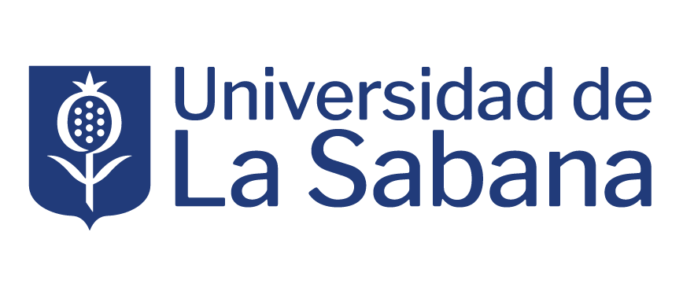

Investigación
La producción científica aumentó en el periodo
Se consolidaron los grupos de investigación y se amplió la colaboración con otras instituciones, con foco en la transferencia de conocimiento.
+34%
Artículos indexados
Scopus · 2022–2024
128
Proyectos vigentes
Con financiación externa
Diseñado con Claude Design